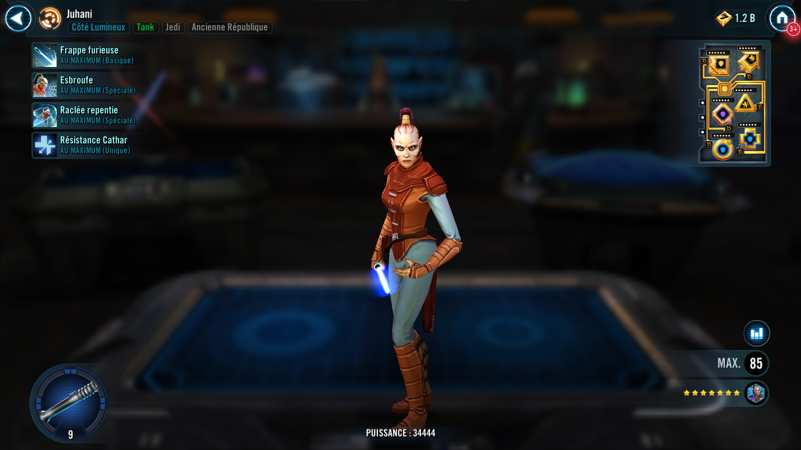

Juhani
Unique Jedi Tank who dispels debuffs from Old Republic allies and becomes more dangerous below full Health

Basic Attack: Raging Strike
Deal Physical damage to target enemy. This attack deals 10% more damage for each debuffed enemy.
Special Attack : Boastful Provocation (cooldown: 4)
Dispel all debuffs on Jedi and Old Republic allies. Then, Juhani gains Taunt for 4 turns and Stuns the target enemy for 1 turn, which can't be evaded.
Special Attack : Remorseful Thrash (cooldown: 3)
Deal Physical damage to all enemies. For each Critical Hit, Juhani recovers 10% Health and Protection. If Juhani is Stealthed when this ability is used, Stagger each enemy for 2 turns.
Unique Ability : Cathar Resilience
Juhani recovers 20% of her Health at the beginning of each of her turns. While Taunting, Juhani has +35% counter chance.
When Juhani falls below 100% Health, she recovers 5% Protection for each active Jedi or Old Republic ally, then gains Health Steal Up, Offense Up, and Stealth for 2 turns. If Juhani had Taunt when this condition was met, dispel Taunt.
Omicron Boost : While in Territory Wars: At the start of battle, Juhani Taunts for 2 turns. Then Juhani, a random Dark Side Unaligned Force User ally (excluding Empire, First Order, and Galactic Legends), and a random Light Side Unaligned Force User ally (excluding Galactic Legends) gain Redeemed until Juhani is defeated, which can't be copied, dispelled, or prevented.
Redeemed: +35 Speed; whenever an ally with Redeemed uses an ability during their turn, all other allies with Redeemed assist; whenever an ally with Redeemed gains a buff, dispel all debuffs on allies with Redeemed; whenever an ally with Redeemed is damaged by an enemy, all allies with Redeemed gain 15% Turn Meter; whenever an ally with Redeemed is inflicted with a debuff, all allies with Redeemed recover 15% Protection